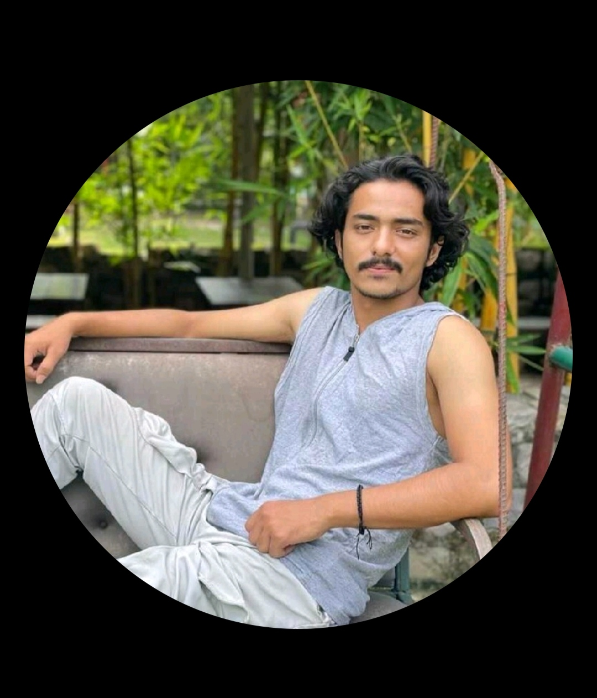

|  |
Satwik Joshi
SRM Institute of Science &Technology
|
Strong in design and integration with intuitive problem-solving skills. Proficient in JAVA and C++ & DBMS. Passionate about implementing and launching new projects. Ability to translate business requirements into technical solutions.Looking to start the career as an fresher with a reputed firm driven by technology.
Seeking an entry level position where my analytical and leadership skills could be utilized to achieve the goal of the Organization.
| Degree Certificate | Board/University | Year of Passing | Percentage/SGPA/CGPA |
|---|---|---|---|
| BTech(Computer Science Eng.) | SRM University | 2021 | 79.23% |
| AISSCE (Class XII) | Central Board of Secondary Education | 2016 | 57.3% |
| AISSCE (Class X) | Central Board of Secondary Education | 2014 | CGPA 7.4 |
PROGRAMMING LANGUAGE :- JAVA, DATA STRUCTURE, DBMS ,HTML,CSS
OPERATING SYSTEM:- Windows
Fresher.
• Java Programming (Coursera) • Java Programming Masterclass (UDEMY) • Data Structures (UDEMY)
• Ability to work as a team. • Ability to manage timeproperly. • Ability to communicate • Ability to work under pressure.
• English • Hindi
• Gaming (Mobile) • Swimming • Listening music • Travelling to new places
• Login and Registration System • Smart Attendance System using DeepLearning
• Permanent address: GAYATRI NAGAR LINEPAR MORADABAD, UTTAR Pradesh 244001 • Phone: +918859440134 (Calling) ,+91 7500472048(Whatsapp) • Email: sg7774@srmist.edu.in • Date of Birth: 18/09/1999